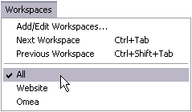
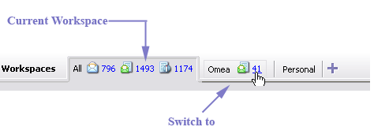
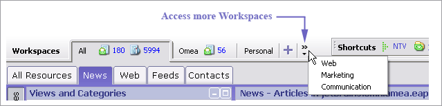
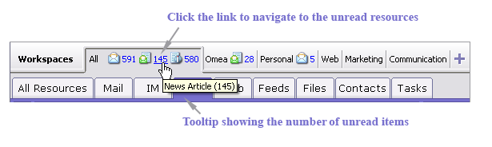
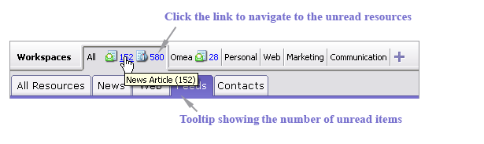
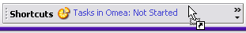
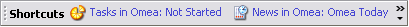

Organizing Using Workspaces
Workspaces enable you to work with a subset of all the resources on your computer in a context that’s meaningful to you. You can create Workspaces for different projects, activities, or even people. For each Workspace, you can define what resources are available to you while working in it. For example, if you have two projects you are working on, you can create a Workspace for each one. You can then define which resources you want to have available when working on each project: Windows and Outlook folders, on-line resources such as feeds, newsgroups, and web pages, and Contacts.
Then, when you work on one of the projects, you have available all the resources you need for it, but no more. The "noise"... that is, the aggregate mass of information on your computer, is effectively filtered out. You don’t waste time wading through information that’s not relevant to what you’re working on. The aggregate mass of information is still there of course. It is represented by the default All Workspace, which is always present (and for some people it may be enough). If you need something that’s not in a custom Workspace, you can switch to All and browse or search for it. You can then make it part of any custom Workspace(s) you may have set up.
How are Categories Related to Workspaces?
You will most likely want to get started with Omea by creating Categories in the All Workspace. This is the default Workspace, always present, and it contains all of the resources you are managing with Omea ReaderOmea Pro. Later on, you may decide to create additional Workspaces to contain subsets of your resources that you work with in a particular context. (For more information, see Organizing Using Workspaces).
The main things to remember about Categories and Workspaces are:
- Categories you create in the All Workspace can be optionally added to and accessed from any custom Workspaces you create.
- Categories you create when working in a custom Workspace are accessible in that Workspace and All, but not in other custom Workspaces.
For example, suppose you create a Workspace named "Project ABC" and another named "Personal". While working in the Project ABC Workspace, you create a Category named "Whitepaper Research" In this case, your Whitepaper Research Category will show up when you are working in Project ABC, but not when you are in the Personal Workspace. It will appear in the All Workspace, however.
Creating a New Workspace
To create a new Workspace:
- Choose Workspaces | Add/Edit Workspaces on the Main menu. The Workspaces dialog appears.
- Click the New button. Enter a name for the new Workspace and press OK.
-
Select the new Workspace in the list of Workspaces and browse through the Resources in Workspace tab. In each tab, select the resources
you want to be available in this Workspace and click the Add (or for some resources, Add
Subtree) button to add them to the new Workspace. (For more information
see Add vs. Add Subtree) below. The added resources appear in "In Workspace" area.
Only those resources that you have specified for indexing in your Options settings will appear in the Available list.
- Select the color of the Workspace in the Color area under the Resources in Workspace tabs. As you click different places of the color selector, you can preview the resulting color in a small square at the left from the color selector.
To select a different color than the one available of the color selector area, click Other…. In the Color window which opens, select the desired color in the Basic colors list or define a Custom color. After you have selected or defined the desired color, click OK to close the Color window and return to Workspace editing. - When you have specified all the resources you want to access and work with in the new Workspace, click Close.
“Add” and “Add Subtree”
The Mail, News, Web, Feeds, Files, and Category tabs of the Workspaces dialog provide two button controls for adding resources to a Workspace:
- Add adds only top-level content to the Workspace
- Add Subtree adds top-level content, plus content from any sub levels that may exist now, or which may be added to the structure in the future.
Example
Suppose you are adding Feeds to a Workspace. Let’s say you have a feed group folder Software, which contains a feed Software News, and a sub-folder JetBrains which contains feeds named Omea News and IDEA News.
If you select the Software folder and click Add, your Workspace will only contain the Software News feed because that item is in the top-level folder, and Add does not include any sub-folders.
If you want to add all the contents of the Software folder including the JetBrains sub-folder use Add Subtree to add the content to the Workspace.
Switching between Workspaces
There are 2 ways to switch between Workspaces:
- Main Workspaces menu
- Workspace selectors in the main window
- Keyboard shortcuts (Ctrl+Tab to move to next Workspace and Ctrl+Shift+Tab to move to previous Workspace)
Workspaces Menu
The Workspaces menu enables you to navigate randomly or sequentially between Workspaces. Sequential navigation is provided with the Next Workspace and Previous Workspace and their respective keyboard shortcuts Ctrl + Tab and Ctrl + Shift + Tab.
The Workspaces menu
The bottom section of the menu lists the currently defined Workspaces. You can randomly choose any Workspace and move directly into it.
Workspace Selectors
These appear in the Main window just below the Main menu, to the right of the bold-face Workspaces label. The current Workspace appears highlighted. Switch Workspaces by clicking on the one you want to switch into.
Switching Workspaces with selectors
If Workspace selectors are out of view due to lack of space to display them, a "chevron" button appears at the right edge of the Workspace selectors. When you click it, a menu list of the hidden Workspaces appears. You can navigate into any of these "hidden" Workspaces by clicking the Workspace name in the menu list.
Selecting Workspaces when there is insufficient room to show the selectors (in Omea Reader)
If you have multiple Workspaces, you can hide any one of the selectors from view using the Hide item on the context menu of the Workspace selector. You can use the "chevron" button (described above) to restore a hidden selector.
Associating Resources with a Workspace
All resources are always available in the default All workspace. If you have multiple Workspaces, you may encounter situations where...
- ...you left some resources out of a Workspace when you defined it, or
- ...you have added some resources in another Workspace and you want to associate them with another Workspace (other than All).
To associate a resource with a Workspace:
- Locate the resource in a Workspace in which it now appears and select it.
- Drag the resource and drop it on the Workspace selector.
Alternatively, or if the target Workspace selector is not currently in view, you can choose Add to Workspace on the main Actions menu or the resource’s context menu. The Select Workspace dialog appears listing all your current custom Workspaces. Select the Workspace you want the resource to be part of, and click OK.
Associating Categories with Workspaces
The main things to remember about Categories and Workspaces are:
- Categories you create in the All Workspace can be optionally added to and accessed from any custom Workspaces you create.
- Categories you create when working in a custom Workspace are accessible in that Workspace and All, but not in other custom Workspaces.
- When you add a category to a Workspace, all resources in that Category are visible in that Workspace.
Suppose you have created some Category in some Workspace, and you later decide you want that Category available in another Workspace where it is currently not available. You can easily add it to the other Workspace.
To add a Category to a different Workspace:
- Switch to the Workspace where the Category now appears if you are not already in it.
- Show the Views and Categories pane if it is not currently visible. (Click the Views and Categories button in the Left Sidebar.)
- In the Views and Categories pane, select the Category you want added to a different Workspace.
- On the main Actions menu, or on the Category’s context menu, choose Add to Workspace. The Select Workspace dialog appears listing all your current custom Workspaces.
- Select the Workspace you want the Category to be part of, and click OK.
Navigating to Resources Associated with Workspace
Besides the possibility to isolate yourself from a bunch of information you can now easily navigate to the unread resources in your Workspaces by clicking the Unread Items counter in the Workspaces bar. When you move the mouse pointer to the unread items in the Workspaces bar, the mouse pointer images changes and the number of unread items will also be displayed in a tooltip.


Workspaces bar possibilities
Removing a Workspace
Your custom Workspaces need not be permanent fixtures. If things change and the Workspace no longer provides a relevant or useful context for you, you can delete the Workspace.
When you delete a Workspace, you delete only the Workspace definition. No resources are deleted from Omea ReaderOmea Pro. All the resources that were available in the deleted Workspace will still be accessible in the All Workspace, and any other custom Workspace(s) that may be accessing them. If you create a new Workspace, you can associate any of the resources that were part of the deleted Workspace with the new Workspace.
To delete a Workspace:
- Choose Workspaces | Add/Edit Workspaces on the Main menu. The Workspaces dialog appears.
- In the Workspaces list, select the Workspace(s) you want to delete.
- Click the Delete button to delete the selected Workspace definition(s).
- Click the Close button to close the dialog.
Tips and Tricks
Removing Resources from Custom Workspaces
You have probably come through the following situation. You have created a custom Workspace and added some resources to this new Workspace but these resources also exist in the All Workspace. The important thing is when you delete these resources from this custom workspace, the resources will also be deleted from the All Workspace and will no longer be available for you.
To avoid such situation and not to loose some really important information, you need to configure the properties of the custom Workspace (remove the resources which you don't want to work with in this Workspace) but not to delete the items which this Workspace “shares” with the All Workspace. To do it, you need to repeat a usual procedure when you add resources to the Workspace but the difference is… you have to remove the resources which you no longer want to work with in the custom Workspace or Workspaces . From the Workspaces menu, select Add/Edit Workspace, select the desired Workspace in the list of Workspaces, click the appropriate resource tab, select a resource in the right part of the screen and click Remove). The resources in the All Workspace will remain untouched, but will no longer be available in the custom Workspace.
Workspaces and Shortcuts
You can now add shortcuts to custom and default Views and View folders (from the Views and Categories pane) which exist in different Workspaces. Such shortcuts will allow you to quickly jump to the desired View or Pane in a Workspace different from the one you work in at the moment.
To add such shortcut, select the desired View or View folder in the Views and Categories pane of some resource tab of a custom Workspace, then drag it and drop to the Shortcuts bar. As you drag the resource to the Shortcuts bar, the mouse pointer changes as in figure below.

Adding a shortcut
The shortcut which you have added while working in a different workspace (different from All), will have the following name: name of the resource tab followed by the name of the Workspace, then a colon and a name of the View.

Shortcuts bar (Shortcuts from different workspaces have been added)
You can later rename the shortcuts and change their order using Organize Shortcuts dialog.
“Other” View in Workspaces
You may come over the situation when some interesting resource appeared in a Custom or All Workspace you want to add this resource to a Workspace other than All. You can do it when
- you select several items in the Items List of any resource tab (News, Web, Feeds, etc.)
- or in the resource pane (Feeds, Newsgroups, Outlook Folders, ICQ Correspondents, Bookmarks , Indexed Folders),
then right-click and select Add to Workspace or when you open Workspaces dialog (Workspaces>Add/Edit Workspaces) and add some resources to Other View area of the resource tab in this dialog
or
drag the resources either from some resource pane or the Items List and drop them to the Custom workspace button.
All these actions will result in what you can see in the so called Other View of the Workspaces dialog and a special Other View of the Views and Categories pane or the resource pane . This View appears either in Views and Categories pane and in Other area of the Workspaces dialog when you select the Workspace to which you have added these resources.
To see the resources in the Other View, click the Other View icon (). The resources appear in Omea's Items List.
Reordering Workspaces
To change the order of the Workspaces in the Workspaces bar, open the Workspaces dialog, select the desired Workspace the order and click either  or
or  to move the Workspaces up or down (respectively) in the list of Workspaces in the Workspaces bar. As you do it, the order of the Workspaces in the Workspaces bar also changes.
to move the Workspaces up or down (respectively) in the list of Workspaces in the Workspaces bar. As you do it, the order of the Workspaces in the Workspaces bar also changes.